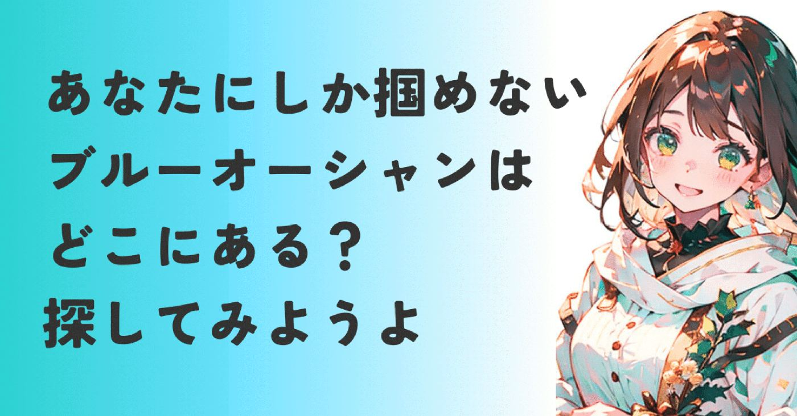
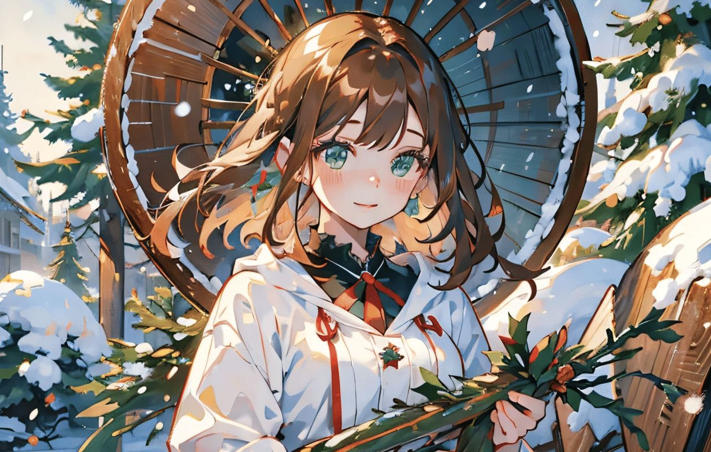
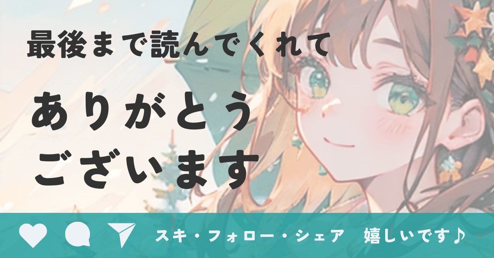

こんなに努力しているのに、なんで見つけて
もらえないんだろう。
誰よりもいいモノを作り、提供している自負はある。なのに大手との価格競争に巻き込まれ、後から来た勢いのあるスタートアップに顧客をかっさらわれる現実。
起業支援の現場で、そんな経営者さんの悲痛な声を何度も聞いてきました。
もしあなたが今、
後発だからもう席がない
自分のポジショニングが見つからない
と悩んでいるなら、必要なのは努力の量を増やすことではありません。
努力の方向を変えること。
今回は後発参入者こそ知っておきたい、
ブルーオーシャン戦略の本質と
誰でも実践できるフレームワークを
Canvaの成功事例とともに解説します。
なぜ今、起業に「ブルーオーシャン戦略」が必要なのか？
ブルーオーシャンとは、
競争をゼロにする新しい市場
のことで、既存の市場ルールを破壊し、独自の
価値を創造することで生まれます。
前にティファールの事例で語ったやつです▼
https://note.com/alive_sheep6563/n/n1a4625a99f70
ブルーオーシャンを目指すことは、ざっくり
６つの大きなメリットがあります。
価格競争から脱却し、高利益率を維持する6つのメリット
① 価格競争からの脱却と高利益率の維持
競合がいないため、自分が設定した価格で
商品・サービスを提供でき、高い利益率を確保しやすくなります。
② 強いブランド力と顧客の信頼を構築
新しい価値を提供することで、ブランド認知度と顧客からの信頼（ロイヤリティ）を高められます。
③ 高い市場シェアの獲得と独占
未開拓市場の開拓者として、その市場を独占し、長期的な優位性を確立できます。
④ 低コストでビジネスを展開
既存の競争要因を取り除いたり削減したりすることで、少ない費用でビジネスを運営できることに繋がります。
⑤ 持続的な成長の機会
新しい市場を創造することで、長期的な成長と安定した収益基盤を築くことができます。
⑥ 事業規模を問わず挑戦しやすい
個人事業主やフリーランスなども、大きな投資なしに新たな市場を見つけ、大手企業と競合を避ける手法としても有効です。

また、ブルーオーシャンの中で独占的な価値を提供することで、顧客は長くサービスを使い続けてくれます。
以前お話ししたサブスクモデルの鍵となる
LTV（顧客生涯価値）の向上に直結しますね▼
https://note.com/alive_sheep6563/n/nbe0f09c390a1
レッドオーシャン（赤い海）で消耗し続けるリスクとは
反対の意味として、レッドオーシャンという
言葉も別の記事で使ってきました。
大きな利益が得られる市場や、成熟しきっている市場には、競争相手が多数存在します。
事業者たちが顧客を激しく奪い合う様子を、
海賊同士が争い海が血で染まったことに例えて
レッドオーシャン（赤い海）と呼ぶんだそう。
争いのない海では血が流れませんから、
対極にあるのがブルーオーシャンということなんですね。
ブルーオーシャンを見つける技術「ERRC」フレームワーク
では、その夢のようなブルーオーシャンを
どうやって見つけるのかというと、
"ERRC"(エルック)というフレームワークで
分析することが可能です。
"ERRC"とは、
4つのアクションフレームワーク（ERRC）
で、サービスの価値構成要素を以下の
4つの視点から分解・再構築する手法なんです。
4つの視点（排除・削減・向上・創造）で価値を再定義する
① 排除 (Eliminate)
業界の常識だが、顧客の価値に貢献して
いないムダな要素を捨てる。
② 削減 (Reduce)
必要な要素だが、コストをかける必要がない
要素のレベルを下げる。
③ 向上 (Raise)
顧客満足度を高めるために、業界の
標準以上に引き上げるべき要素。
④ 創造 (Create)
業界でこれまで提供されたことがない、
新しい価値を生み出す。
ポイントは、業界に対する見方や向き合い方を変えること。
これがバリューイノベーション（価値革新）に
近づくヒントになる。
ただ、個人的には現場の肌感やひらめきを
踏まえたうえで、フレームワークを使うのが
大切かなと思ってますが…
私はどちらかというと営業側の人間だし、
かなりの偏見かもしれませんね。
本業がマーケターの方や有識者さま、
コメントでご意見もらえたら嬉しいです。
後発が市場を独占した事例｜Canvaに学ぶ「デザインの民主化」
このフレームワークの良さを体感して
もらうために、私たちが日常的に使うサービスを事例に出してみます▼
あなたも使ってますか？デザインツールのCanvaです。
Canva が出てくる前は、プロではない人が
デザインをしようと思ったら、
PhotoshopやIllustratorのようなプロ用ツールを使う必要がありました。
実は私も少しいじったことがあるんですが、
恥ずかしながら、早々に挫折しましたとも。
使いこなしている方々はすごいなぁ。
同じ経験された方、いらっしゃいますか？
プロの常識を排除し、初心者の理想を創造した戦略
それはともかく、Canvaはこのデザイン市場の常識をゴリゴリと破壊していきます。
レイヤー操作をはじめとする、高度な
専門知識や複雑なマニュアルを排除
専門的な印刷設定など、機能の深さを削減
テンプレートの量、ドラッグ＆ドロップの
直感的な操作性を向上
「誰でもプロ級のデザインができる」という
新しいカテゴリーを創造
まとめるとCanvaは
プロの専門知識という大きなコストを排除し、テンプレートと簡単さという新しい価値を
創造したんです。
プロだけの領域を、誰でも使えるようにした
デザインの民主化。
これでプロ以外の個人という巨大な市場、
ブルーオーシャンを独占できたんですね。
今もCanvaはAdobe相手に漸進的な取り組みを続けてますし、目が離せないスタートアップの一つでもあります。
完全に余談で申し訳ないですが、Adobeの
Firefryも興味があるんですが…
インスタ見てると便利そうなんだよね…
note後発組や個人が「自分だけの市場」を開拓するために
このフレームワークを有効に活用するために、以下を参考にしてみてほしいです。
排除・削減
価値を生んでいないのに続けている
慣習や文化はあるか？
向上・創造
「あなただから提供できる価値」は何か？
上記をリストアップすることで見えてくるんですが、この手のリストアップってほんと面倒。
私はやりたくない。
でもやらないと先に進まない。そんな時はiPhoneのメモアプリを開いて、音声入力する
ようになりました。
戦わずして勝つ、あなただけのブルーオーシャンへ
ブルーオーシャン戦略とは、努力の方向を変えて無駄な競争から離脱し、あなたの強みを最大限に活かせる場所を探すこと。
消耗戦を続ける時間も労力も。
あなただけのブルーオーシャンを見つけて
終わりにしたいものですね。
さてもうすぐクリスマス。
私はサンタにならないといけないので、
子ども(0歳♂2歳♂)のプレゼント、
何かおすすめありますか？
プラレール以外で教えてください🥹
